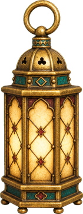
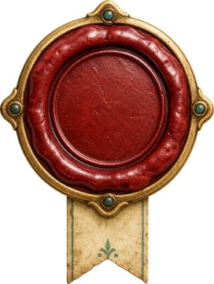
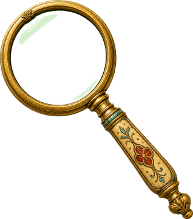
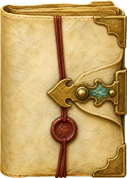
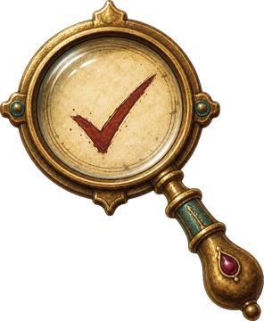
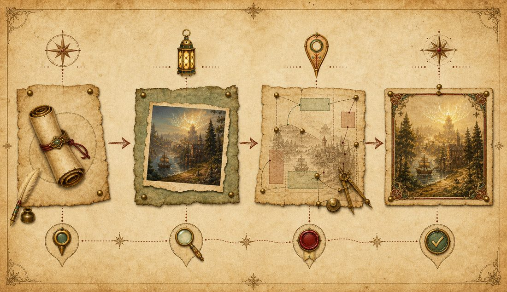
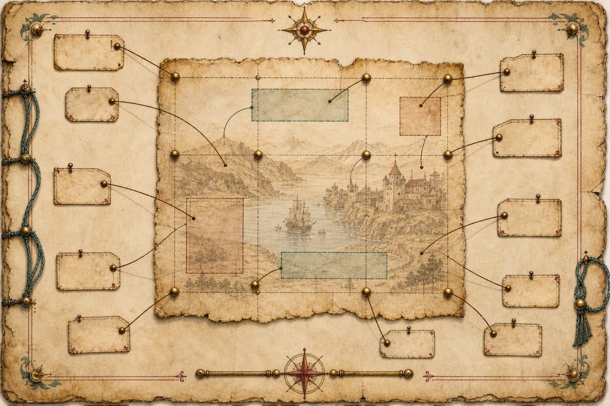
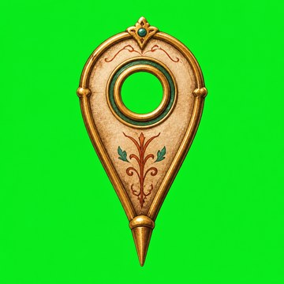

Place
Anchor mapping names where the visual belongs before the page is built, so images stop colliding with text, buttons, and mobile crops.

A found field notebook for MeganA plain-English tour of how Visual Asset Integration turns AI-built shareables from generic pages into intentional, image-led artifacts with real source discipline.

Public-safe
Visually QA'd
Proof-awareA generic shareable drops images into a page because a page feels empty. A designed shareable asks what each image is responsible for: orienting the reader, proving a claim, creating mood, explaining a workflow, or making an action feel cared for.
Anchor mapping names where the visual belongs before the page is built, so images stop colliding with text, buttons, and mobile crops.
Generated visuals can carry personality. Real artifacts carry proof. The workflow keeps those roles separate.

The work is not done when the image looks good in chat. It is done when the recovered file renders cleanly on the public page.
The artifact you are reading is a live demo of the workflow. Its backgrounds, diagrams, icons, buttons, and atmosphere are generated assets. Its claims are source-labeled. Its layout is checked against visual anchors.

Instead of saying "put the image somewhere near the text," the workflow gives each visual a named region, role, risk, and verification test. Select a pin to see what that means in practice.

For icons and cutouts, the corrected workflow generates one object on chroma-key green, recovers the actual image bytes, then creates a transparent derivative. The green image below is a recovered file, not a screenshot of the chat.

When an image appears in chat but no durable PNG is saved, recover the base64 result from the Codex rollout JSONL, copy it to a stable project path, and verify it before editing or placing it.
python3 scripts/recover_codex_imagegen.py \
--latest-only \
--name-hint "<asset-slug>" \
--copy-latest-to "<project-root>/.codex-outputs/images/<lane>/<asset-slug>_v01_<timestamp>.png"
test -s "<absolute-path-to-image.png>"
/usr/bin/sips -g pixelWidth -g pixelHeight "<absolute-path-to-image.png>"For the Pro GM / Goldspire portfolio work, the useful pattern was not "make it prettier." It was: gather real evidence, catalog what it can prove, then use generated visuals to create atmosphere around the proof instead of replacing it.
Real game artifacts, links, screenshots, videos, and documents belong near the claims they support.
Every source gets a label: verified, source-backed derivative, illustrative generated, pending, or unknown.
Generated visuals supply world feel, section rhythm, and reader emotion. They do not pretend to be proof.
Anchor mapping keeps proof readable and prevents decorative art from crowding the work evidence.
A portfolio page can look polished and still fail if the reader cannot tell which images are evidence. The skill forces that distinction early. The emotional layer makes the work memorable; the source layer keeps it trustworthy.
A visual shareable is only finished after the actual rendered page is inspected. The weak spots are predictable: mobile overflow, clipped labels, hidden buttons, broken images, low contrast, and generated visuals accidentally sitting where proof should sit.
This artifact tracks `Hero01`, `Map01`, `AssetLab01`, `CaseStudy01`, `Download01`, and `MobileNav01`. Those anchors define what must be checked before publishing.
The site avoids generic cards-on-gradient styling by giving the entire surface a specific visual system: manuscript textures, generated iconography, muted ink colors, and image-led section rhythm.
The kit includes a sanitized `SKILL.md`, install notes for Codex and Claude Desktop, an anchor-map template, an asset-manifest template, and prompt examples for hero backgrounds and chroma-key icons.
Use it as a portable starting point for future public artifacts, shareables, portfolio pages, or design-heavy docs.
Use this when you want the AI to plan images before generating them.
Create a visual asset plan before generation.
For each asset, define: purpose, source status, anchor, crop behavior, alt text, and QA method.
For icons/cutouts, generate one image at a time on chroma-key green #00ff00.
After generation, recover the durable file and verify it before placement.Place the skill in your local skills folder, then copy the templates into the project that needs visual asset discipline. If you use Codex image generation, keep the recovery script in that project and run it after each generated image.
Add the skill text to project knowledge or instructions. Use the anchor and asset manifest templates as working docs before prompting for images.
They make the AI name the asset's job, source status, placement, crop risk, and verification method before it generates or places visuals.